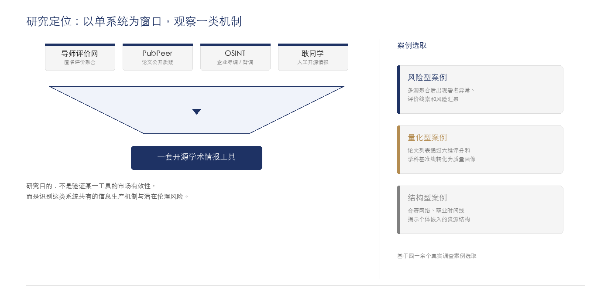

——基于开源学术情报工具的探索性案例研究
周墨 ｜ 南京师范大学文学院
升学择校时，如何选择导师是一个现实问题：导师会不会卡毕业？进组压力大不大？但当我们真正去了解时，能够获取到的信息却非常碎片化。
"选导师基本靠玄学。"
"主要还是问学长学姐，但说实话学长学姐说的也不一定准。"
—— 应届学生访谈
近年来，一批基于开源情报方法的学术背景调查工具开始介入这一场景，聚合多源公开数据进行声誉画像。
新结构：信号不由导师主动释放，而由算法被动聚合
核心问题："还有什么信息不可见？"
理论：Gillespie (2014); Beer (2016)
核心问题："这些信息意味着什么？"
理论：Solove (2006); Nissenbaum (2010)
算法化信息聚合器 — 通过公开数据聚合与算法量化，将分散的声誉信息重组为可比较、可判断、可行动的结构化画像的技术中介。
| 维度 | 搜索引擎 | 平台推荐系统 | 算法化信息聚合器 |
|---|---|---|---|
| 核心能力 | 索引已有信息 | 预测用户偏好 | 重组公开信息的可见性 |
| 数据基础 | 全网文本 | 用户行为数据 | 对象公开记录 |
| 权力来源 | 检索效率 | 数据垄断 | 公开信息的重新配置 |
| 伦理风险 | 信息过载 | 信息茧房 | 再语境化 / 马赛克效应 |
时间：2026年连续举报多位985院长/杰青
工具：公开可下载的论文原始数据
方法：末位数字分布、等差数列等异常识别
结果：多所高校免职、解聘、启动调查

| 双层操作 | → | 案例机制 |
|---|---|---|
| 信息层面：结构化重构 | → | ① 碎片聚合（风险型案例） |
| 认知层面：算法化转译 | → | ② 基准线校准（量化型案例） |
| 两层协同 | → | ③ 交叉验证（结构型案例） |
案例选择标准：完整七步流程、信息维度差异显著、公开数据来源可追溯
结构化重构
风险模式浮现
算法化转译
质量画像
算法偏差示例：格式解析异常、概念整合型创新被低估
2026年，博主"耿同学"通过公开论文数据，连续举报多位985高校院长及杰青学者，引发多所高校免职与调查。
公开数据聚合的声誉调查能力已从算法系统扩散到个体行动者
引发的不仅是技术效率问题，更是伦理与权利问题
风险画像：署名异常 + 评价汇聚 + 网络依赖
置信度：中 ｜ 来源：多源聚合
传统困境
学生：信息不足
解决：熟人网络、道听途说
权利焦点：知情权
转向
算法化聚合后
学生获得：更强的信息获取能力
被评价者面临：可见性压力、语境失控
权利焦点：名誉权、解释权、纠错权
治理目标：不是否定公开数据聚合的价值，而是防止有限证据被包装为过度确定的声誉判断。
| 层级 | 应用场景 | 规制强度 |
|---|---|---|
| 个人参考型 | 学生择导时的信息补充 | 提示义务 + 人工复核 |
| 公开传播型 | 可检索、可复制的评价系统 | 算法备案 + 申诉机制 + 定期风险评估 |
| 正式决策型 | 招生、聘任、奖惩流程 | 程序正义 + 第三方审计 + 决策留痕 |